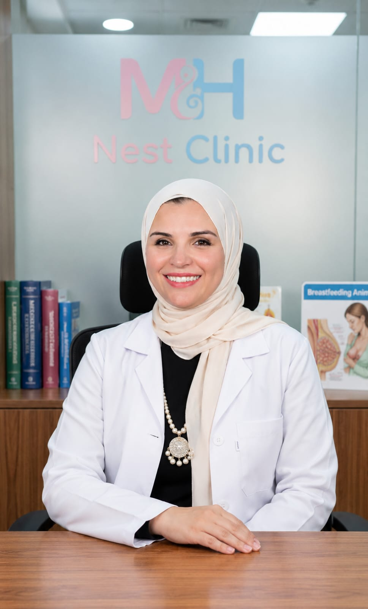

د. ميادة حازم
Dr. Mayada Hazem — Nest Clinic
طبيبة أطفال وأخصائية تغذية علاجية للأطفال
نبذة طبية
طبيبة أطفال وأخصائية تغذية علاجية للأطفال، متخصصة في متابعة نمو وتطور الرضع والأطفال، والتغذية العلاجية السليمة في مختلف المراحل العمرية، وتقديم التوعية الطبية المبسطة للأمهات والآباء.
العيادة ومقر العمل
- العيادة: نيست كلينك (Nest Clinic) لطب الأطفال والتغذية العلاجية.
- العنوان: كمبوند جاردينيا سيتي، طريق السويس، المركز الطبي City Care، الدور الثاني، عيادة R4 — القاهرة.